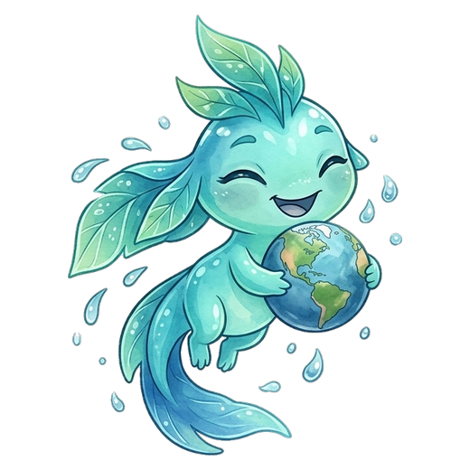
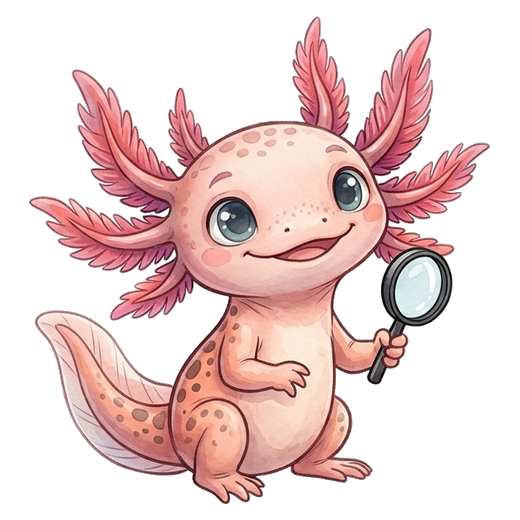
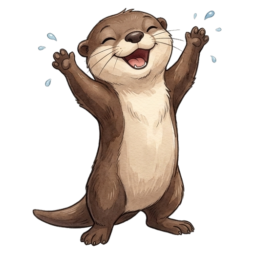
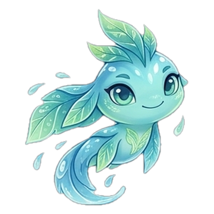
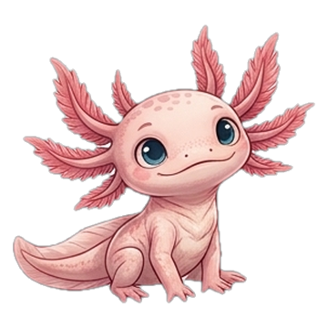
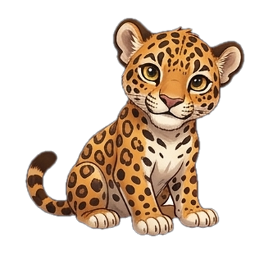
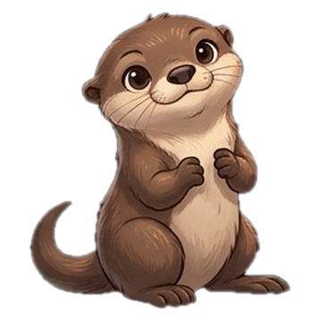

Xlatierra es educación climática en español para jóvenes de América Latina: clara, visual, con fuentes confiables y pensada para llevarte del conocimiento a la acción.
Mucho del conocimiento sobre clima está en inglés, es demasiado técnico o se siente lejano de lo que vivimos en México y América Latina. Y cuando por fin lo entendemos, casi nunca nos dice por dónde empezar.
Cursos interactivos de unas 2 horas cada uno, a tu ritmo y desde el celular. Con datos de México y América Latina, preguntas para adivinar antes de leer, actividades, fuentes en cada lección y un certificado al final.

Qué está pasando con el clima, por qué, a quién le afecta más y qué puedes hacer.

Ecosistemas, especies, lo que las amenaza y cómo protegerlas, de México a la Patagonia.
Recorre los impactos del cambio climático en México y la biodiversidad de América Latina, lugar por lugar, con recorridos guiados, retos y la fuente de cada dato.

Respiración guiada, buenas noticias con fuente, música, arte de la comunidad y mensajes de ánimo para convertir la ecoansiedad en acción.
Entrar al Refugio →Cada lección conecta lo que dice la ciencia con tu realidad, contigo, con tu comunidad y con algo que puedes hacer. Sin alarmismo y sin simplificar de más.
Cuatro personajes te acompañan en un recorrido de aprendizaje: de la curiosidad a la capacidad de actuar por tu comunidad. Cada uno viene de un ecosistema de México, y el agua es lo que los une.

DescubrirTe acompaña a lo largo del curso, introduce cada tema y convierte lo complejo en explicaciones sencillas.
📍 Viene de los manantiales: ameyalli significa «manantial» en náhuatl, el agua que brota de la tierra y alimenta ríos, humedales y cenotes.
«¡Cada descubrimiento nos acerca a un planeta mejor!»

ComprenderEl pequeño científico del equipo: le encanta descubrir especies, explorar hábitats y compartir datos sorprendentes sobre la naturaleza.
📍 Viene de los humedales de Xochimilco. Es un ajolote (Ambystoma mexicanum).
«¡Mira todo lo que podemos aprender de la naturaleza!»

ProtegerLa fuerza del equipo: nos recuerda que todos los seres vivos están conectados y qué está en juego.
📍 Viene de la Selva Maya. Es un jaguar (Panthera onca).
«¡Proteger la naturaleza también es nuestra responsabilidad!»

ActuarLa aventurera del grupo: protagoniza los retos y te invita a pasar de la teoría a la práctica.
📍 Viene de los ríos de México. Es una nutria de río neotropical (Lontra longicaudis).
«¡Menos quedarnos con la duda y más ponernos en acción!»
Ana Cecilia Licéaga Gutiérrez (Ana Ceci) es estudiante de Ingeniería Mecánica en el Tecnológico de Monterrey, Campus Estado de México.
Creó Xlatierra para acercar el conocimiento ambiental a más jóvenes: educación climática en español, accesible, comprensible y cercana a las realidades de las comunidades hispanohablantes. El proyecto nace en el marco de BeVisioneers: The Mercedes-Benz Fellowship, del que Ana Ceci es fellow.
Estamos en fase beta. Si eres joven, docente u organización y quieres probar el curso, darnos ideas o colaborar, escríbenos.